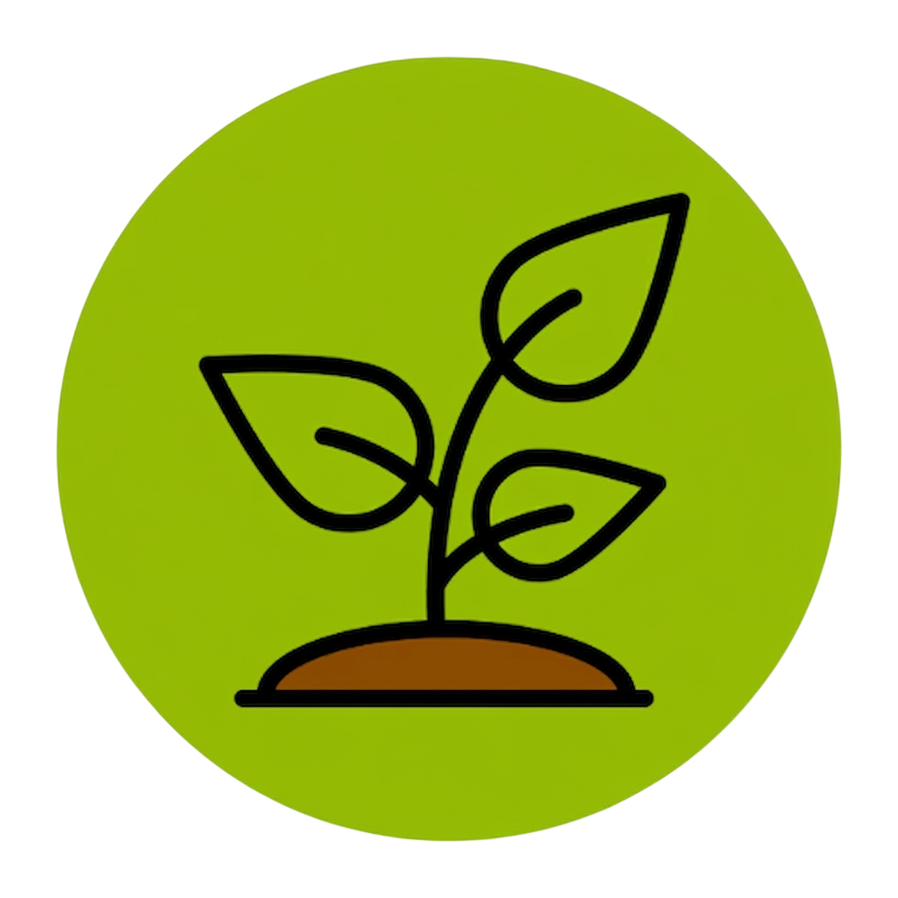
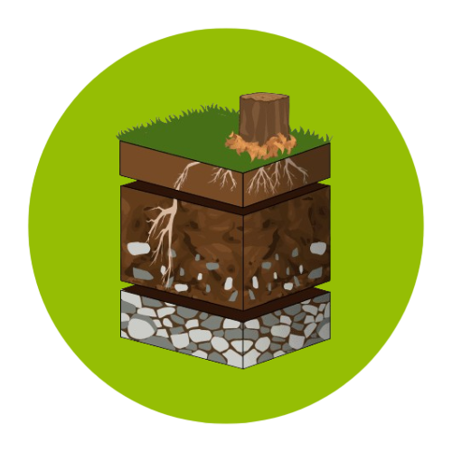

Soil is the superficial, living, and biologically active layer of the Earth's crust, composed of minerals, organic matter, water, and air. It functions as a complex ecosystem that supports plant life, filters water, recycles nutrients, and serves as a habitat for numerous organisms, being essential for food production.

It is composed of a mixture of rock fragments (minerals), decomposed organic matter (humus), living organisms, air, and water. Furthermore, it is not inert material (it is alive) and harbors 25% of the planet's biodiversity, including essential microorganisms. It is organized into horizons, with the upper layers richer in organic matter and the lower layers richer in rock fragments, arranged from top to bottom as organic (O), topsoil (A), subsoil (B), parent material (C), and bedrock (R). Its formation is a slow process over thousands of years, derived from the weathering of the 'bedrock' by climatic and biological factors.
Among its functions, soil acts as a support for life and the main medium for plant growth and the production of 95% of the world's food. It also serves as an environmental regulator, filtering pollutants, purifying water, and storing carbon, helping to mitigate climate change, and finally as the foundation of ecosystems, serving as the habitat for immense biodiversity.